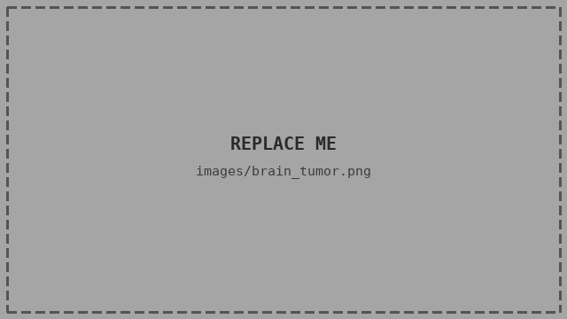
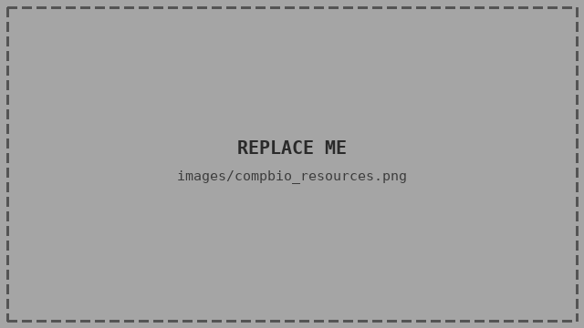

work
sysbio_cadd_internship.md

2026
Systems Biology & CADD Internship
Designed and taught a nine-session internship on systems biology and computer-aided drug discovery for the BRIC centre at Nile University, mentoring two interns through to a capstone project.
pdac_transcriptomics.R

2025
PDAC Integrative Transcriptomics
Bachelor's thesis integrating multiple transcriptomic datasets to study pancreatic ductal adenocarcinoma (PDAC).
smoc2_deseq2.R
2025
SMOC2 Fibrosis RNA-seq
Transcriptomic analysis of GSE85209 using DESeq2, with downstream functional enrichment analysis.
brain_tumor_cnn.ipynb

2025
Brain Tumor Classification
Classified brain tumors from MRI images using deep learning, for a Data Mining & Machine Learning course project.
resources.md

ongoing
Bioinformatics & CompBio Resources
An ever-growing, curated list of courses, tutorials, and learning material across bioinformatics and computational biology.